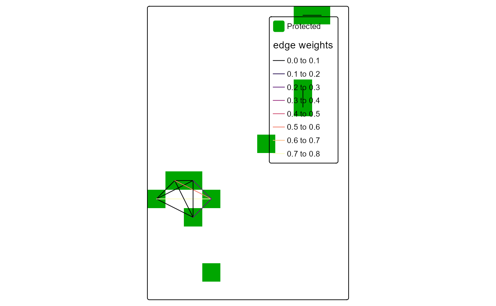

Evaluate outputs
get_outputs.RdEvaluate outputs from basic_scenario or connectivity_scenario functions for a selected feature.
Arguments
- solution
output from basic_scenario or connectivity_scenario functions.
- feature
characterwith a single feature name used for plots.- pre_graphs
output of get_metrics function.
- loose
use loose or strict graph community connectivity definition. See more in details.
- patch
logicalvalue. Ifpatch = TRUE, then different colors can be used for each distinct patch at output plots.
Details
Loose graph connectivity indicates the case where two protected nodes (cells)
can be considered connected, even if the between them cells are not protected
(thus not included in the solution), whereas strict connectivity indicates the
case where two protected cells can be considered connected, only if they are
cells between them that are also protected. The default is loose = FALSE,
indicating the use of the strict connectivity definition.
Value
A list containing the following items:
tmap: tmap plot of the solution including connections.
solution: terra
SpatRasterobject representing the prioritization solution.connections: sf
LINESTRINGobject representing the preserved connections of the solution.connectivity_table:
data.framecontaining all feature names at the first column, the relative held percentages at the second column and the percentage of connections held at the third column.
References
Hijmans, Robert J. 2024. terra: Spatial Data Analysis. doi:10.32614/CRAN.package.terra .
Pebesma, Edzer. 2018. Simple Features for R: Standardized Support for Spatial Vector Data. The R Journal 10 (1): 439–46. doi:10.32614/RJ-2018-009 .
Pebesma, Edzer, and Roger Bivand. 2023. Spatial Data Science: With applications in R. Chapman and Hall/CRC. doi:10.1201/9780429459016
Examples
# Read connectivity files from folder and combine them
combined_edge_list <- preprocess_graphs(system.file("external", package="priorCON"),
header = FALSE, sep =";")
# Set seed for reproducibility
set.seed(42)
# Detect graph communities using the s-core algorithm
pre_graphs <- get_metrics(combined_edge_list, which_community = "s_core")
cost_raster <- get_cost_raster()
features_rasters <- get_features_raster()
# Solve a prioritizr prioritization problem, by incorporating graph connectivity of the features
connectivity_solution <- connectivity_scenario(
cost_raster = cost_raster,
features_rasters = features_rasters,
budget_perc = 0.1,
pre_graphs = pre_graphs
)
# Get outputs from connectivity_scenario function for feature "f1"
connectivity_outputs <- get_outputs(solution = connectivity_solution,
feature = "f1",
pre_graphs = pre_graphs)
# Plot tmap
connectivity_outputs$tmap

# Print summary of features and connections held percentages for connectivity scenario
print(connectivity_outputs$connectivity_table)
#> feature relative_held connections(%)
#> 1 f1 0.1637209 0.3339886
## feature relative_held connections(%)
## 1 f1 0.1637209 0.3339886